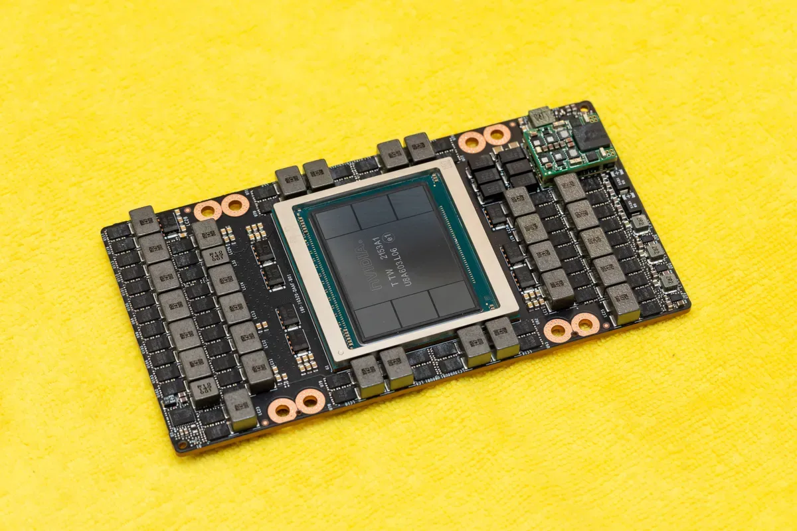
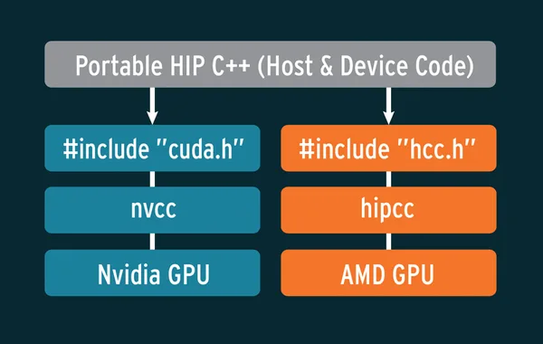
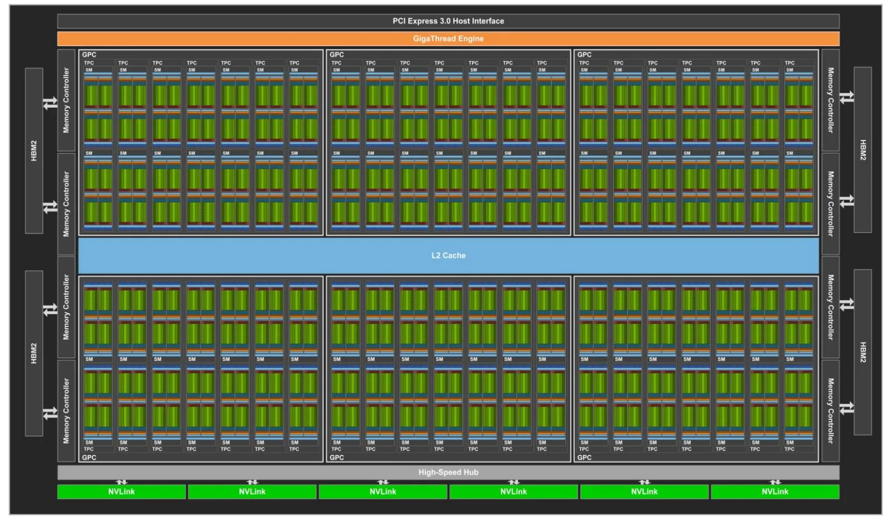
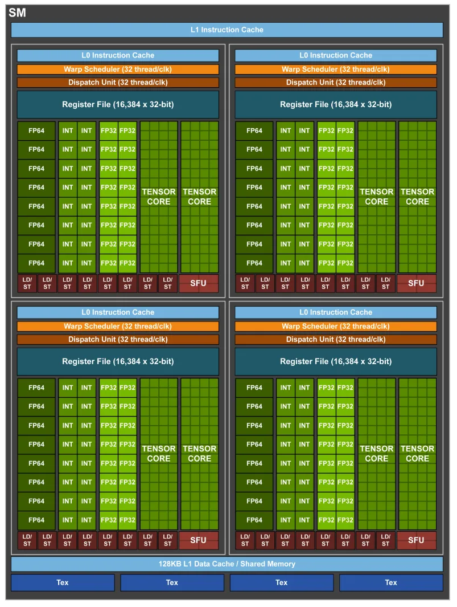
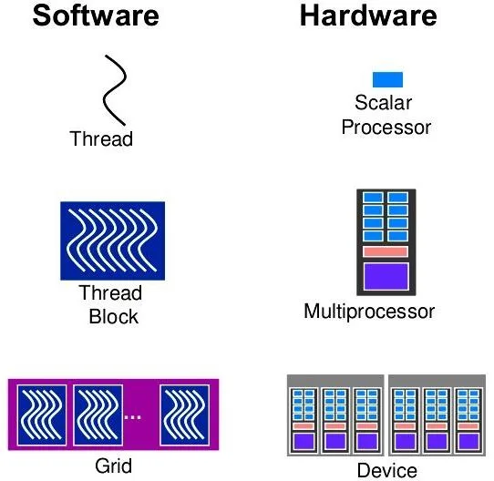
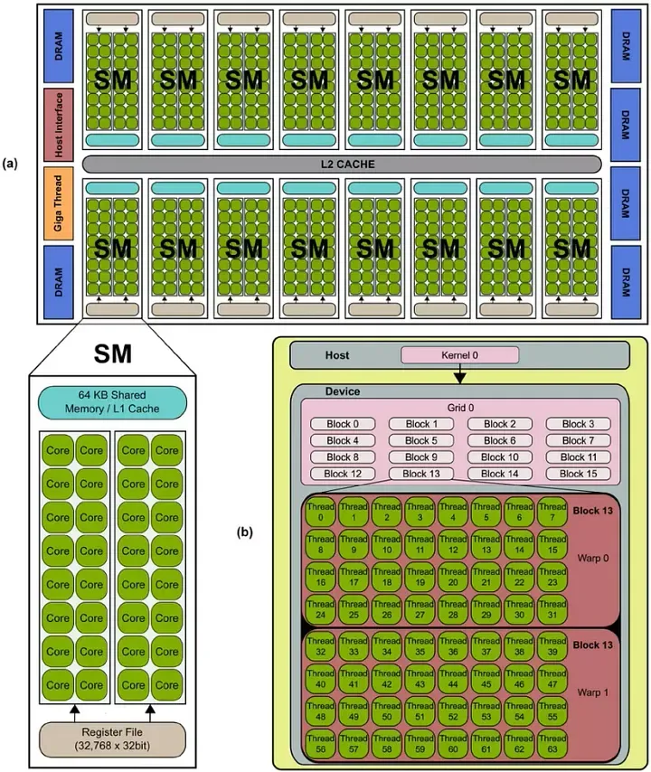
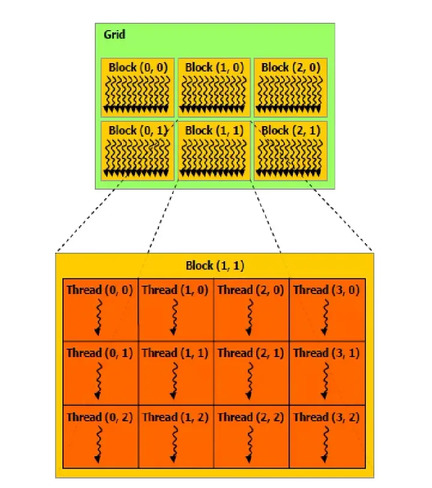
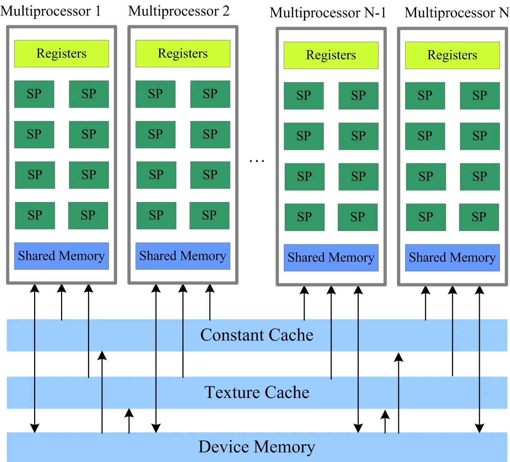
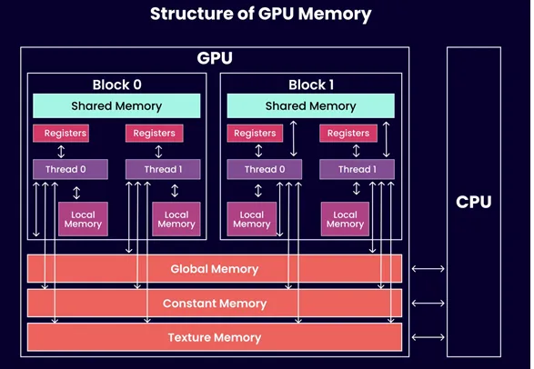
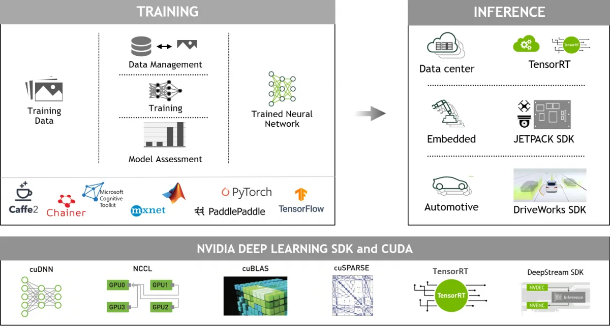

GPU Architecture Overview
Contents

CPU and GPU
- CPU is designed to excel at executing a sequence of operations, called a thread. It can execute a few tens of threads in parallel.
- General purpose, good for serial processing, great for task parallelism, large area dedicated cache and control.
- GPU is designed to excel at executing many thousands of them in parallel.
- Highly specialized for parallelism, good for parallel processing, great for data parallelism, high throughput, hundreds of floating point execution units.
GPU Programming Model
Key Concepts
- Host and Device: Host is CPU and device is GPU, CPU runs the main program and is responsible for offloading parallel tasks to the GPU. GPU performs the computations.
- Kernel: Function that runs on the GPU. It is code will be executed by many GPU threads in parallel. The host program launches a kernel on the device.
- Data Transfer: Data must be explicitly transferred between the host's main memory and the GPU's memory. The host allocates memory on the device, copies data from the host to the device, launches the kernel, and then copies the results back from the device to the host.
- Execution Model: The accelerator model uses a data-parallel execution model. A single kernel is launched to process a large dataset, with each thread handling a small piece of the data. For example in a vector addition, each thread would be responsible for adding a single pair of elements.
Advantages and Disadvantages
Advantages:
- It simplifies GPU programming by abstracting away the hardware complexities.
- Code is more portable across different GPU architectures.
- Allows developers to focus on the parallel algorithms rather than low-level implementation details.
Disadvantages:
- Data transfer between host and device can introduce significant overhead, which can be a bottleneck.
- High-level abstraction may not be suitable for application that require fine-grained control over hardware resources for optimal performance.
- Debugging can be more challenging due to the asynchronous nature of host-device execution.
Accelerator Models

- CUDA: NVIDIA's proprietary programming model for its GPUs.
- OpenCL: An open standard for parallel programming of heterogeneous systems, including GPUs, CPUs, and other processors. It provides a vendor-neutral approach.
- HIP (Heterogeneous-Compute Interface for Portability): A C++ runtime API and kernel language designed to port CUDA applications to AMD GPUs. It acts as a layer that translates CUDA code to run on AMD hardware.
HIP
HIP is designed to be a bridge between CUDA and AMD's GPU platform ROCm. It includes a tool called hipify which can automatically convert most CUDA code into HIP code.
HIP API code is compiled using compiler driver hipcc, it uses the underlying ROCm software stack to compile and run the code on the AMD GPU; It translates the HIP API calls into their corresponding CUDA API calls and then compiles the code with NVCC to run on the NVIDIA GPU.
HIP is a layer on top of CUDA and ROCm. It provides the portability the CUDA lacks, it can run on both AMD and NVIDIA GPUs.
Volta GPU Microarchitecture
Volta is a microarchitecture developed by NVIDIA in 2017, it was a significant leap forward in GPU technology, especially for AI and high-performance computing (HPC) workloads. The most prominent product featuring the Volta architecture was the NVIDIA Tesla V100, a high-end accelerator card for data centers.
Key features:
- Tensor Cores: are specialized hardware units that are highly efficient at performing mixed-precision matrix operations. Tensor cores enabled a massive acceleration of AI training and inference.
- High-Bandwidth Memory (HBM2): This type of memory is stacked in 3D, providing much higher memory bandwidth compared to traditional GDDR memory. This is crucial for handling the large datasets used in AI and HPC.
- NVLink 2.0: New version of high-speed interconnect technology, NVLink. Faster communication link between the GPU and CPU, as well as between multiple GPUs in a multi-GPU system. This was vital for scaling AI and HPC applications across multiple accelerators, preventing data transfer from becoming a bottleneck.
Volta was a foundational architecture for NVIDIA, newer generations build upon the previous one, adding new features and improving performance:
- Turing 2018: Introduced RT Cores for real-time ray tracing.
- Ampere 2020: Introduced 3rd generation Tensor Cores for enhanced AI performanc. 2nd generation RT Cores, and multi-instance GPU, allows a single GPU to be partitioned into multiple instances to serve different users or applications.
- Hopper 2022: Most recent architecture. 4th generation Tensor Cores, 2nd generation MIG
GPU Architecture Scheme

Architecture Scheme:
- GPC (Graphics processing cluster)
- Highest-level cluster on the gpu. It contains all the essential resources for a workload. A GPU chip is made up of multiple GPCs.
- Each GPC typically has its own set of texture processing clusters (TPCs) and a raster engine.
- TPC (Texture processing cluster)
- Sub-unit of GPC, it groups together multiple streaming multiprocessors (SMs) and other dedicated hardware.
- SM (Streaming Multiprocessor)
- Fundamental building block of a GPU. This is where the actual parallel computation takes place.
- An SM contains a collections of processing cores (CUDA cores, in Volta, Tensor Cores), a large register file, a cache hierarchy (L1 cache and shared memory), and other specialized units. It's the core engine that executes a single thread block of CUDA or OpenCL program.
- L2 Cache (Level 2 Cache)
- Large, high-speed memory shared by all the SMs on the GPU. It sits between the individual SM's L1 cache and the slower global memory.
- Its purpose is to reduce latency by storing frequently accessed data, preventing the need to fetch it from global memory, which is much slower. All data access to the global memory must pass through the L2 cache.
- Memory Controller
- Dedicated circuit that manages the flow of data between the GPU's processing cores and the on-board memory (Like HBM2 on Volta)
- Controls memory timing, address mapping, and data transfer rates, ensuring high bandwidth and low latency.
Streaming Multiprocessors

NVIDIA Volta SM contains:
- Processing Cores: The heart of SM, including CUDA Cores for general purpose parallel computations. In mordern architectures, Tensor cores for AI tasks, and RT cores for ray tracking.
- 64 single precision cores
- 32 double precision cores
- 64 integer cores
- 8 Tensor cores
- Memory: Each SM has its own on-chip memory hierarchy, including a large register file for per thread data, a fast L1 cache, and shared memory for inter-thread communication within a thread block.
- 128 KB memory block for L1 and shared memory
- 0-96 KB can be set to user managed shared memory
- The rest is L1
- L0 cache is extremely small and fast cache that sits between the register file and the instruction fetch unit. It acts as a buffer to ensure the warp scheduler always has instructions ready to dispatch, which helps maintain a steady flow of work and prevent stalls.
- Register file is a very large, high=speed memory that stores the private variables for each thread running on the SM.
- 128 KB memory block for L1 and shared memory
- Warp scheduler is the brain of the SM, managing and scheduling the execution of warps, which are groups of 32 threads.
- Dispatch Unit receives instructions from the warp scheduler and issues them to the execution units.
- 65536 registers - enables the GPU to run a very large number of threads.
- Special Function Units (SFUs): Theese are dedicated units that handle complex mathematical operations like square roots and sine functions, which would be slower to compute on standard cores.
- Load/Store Units: These manage all data movement between the SM's memory and the GPU's global memory.
Thread
Thread Hierarchy
All loops in which the individual iterations are independent of each other can be parallelized. When a kernel is called tens of thousands of threads are created. Single Instruction Multiple Data parallel programming model. Threads are grouped in blocks which are assigned to the SMs.

Hierarchical programming model:
- Thread is the smallest unit execution. Single lightweight process that runs a portion of the main parallel function (kernel). Each thread executes the same kernel code but on different piece of data.
- Block is a group of threads. A key abstraction because all threads within a block can communicate and cooperate with each other.
- Threads in a block share a fast on-chip memory called shared memory, and can be synchronized using barriers. It allows them to work together on a common task like transposing a matrix.
- Grid is a collection of thread blocks. It represents the entire workload of the kernel. It is highest level of this hierarchy. Grid is launched from CPU, and its blocks are distributed among the available SMs on the GPU. The blocs in a grid are designed to be independent and have no direct communication with each other. This allows the GPU to schedule them flexibly and in any order.
Thread Scheduling, SIMT
Warp (CUDA) or Wave (HIP) is a group of GPU threads which are grouped physically. Warp contains 32 threads, wave contains 64 threads. All threads in a warp can only execute the same instruction (SIMT).
Physical and Logical Scheme

In the picture, there are 16 SMs, each SM contains 32 Cores.
SPs or cores are main processing units. Cores are like individual students, one student being one core.
SM is a collections/grouping of Cores, like a class. It is higher level unit that manages tasks across the cores.

Thread is a unit of work, each thread represents an individual task.
Block refers to a collection of threads. There is a maximum limit on the number of threads in a block, typically 1024 threads.
Grid refers to a collection or set of blocks.
Threads and blocks are fundamental units of parallel execution.
SM is class room, core is student, thread is task, block is collection of tasks. One core can handle more than 1 thread. To distribute tasks / blocks among the SMs, we need an intermediary called WARP to handle the distribution.
Warp refers to a group of threads that are executed together in parallel. Typically a warp contains 32 threads. Follows SIMD fashion. All 32 threads execute the same instruction but operate on different data. Warp represents the class monitors, they go and fetch the blocks to bring back to their group for processing; after bringing the blocks to their group, the warps distribute the blocks among the individual students for processing.
Memory Architecture
Memory architecture is critical for writing efficient program.

From fastest to slowest, the memory hierarchy is:
- Registers: The fast memory, in each SM. Each thread has its own private set of registers, to store local variables and are managed by compiler
- Shared memory, small, fast, programmer-managed memory on each SM. Threads within a single thread block can use it to cooperate and share data.
- L1 cache: small cache located on each SM, shared by all threads within the SM. It is a hardware-managed cache for frequently accessed data.
- L2 cache: large, unified cache shared by all SMs on the GPU.
- Global memory: Main GPU memory, located on GPU board. Largest and slowest memory, accessible to all threads on the GPU.

- Global memory: The largest and slowest memory, accessible by all threads and CPU. Main storage for data transferred to the GPU.
- Register: The fast memory, private to each thread. Variables declared in a kernel are stored here.
- Local memory: Private memory space for each thread that spills to global memory. Used for thread local data that doesn't fit in registers.
- shared memory: fast, on-chip memory shared by threads within a single block.
- constant memory: read only, cached memory space optimized for broadcasting data to all threads.
- texture memory: read only, cached memory optimized for 2D spatial locality.

When training a model:
- Global memory store entire or mini batch dataset, models weights and bias, and intermediate values like activations and gradients.
- Shared memory, used for cooperative tasks within a block, such as parallel reduction to sum up gradients or to load a tile of a matrix for multiplication.
- Registers: weights and biases, single instance of the input data. are read from global memory and stored in registers for the fastest possible computation.
- constant memory: hyperparameters.
- texture memory: accelerate data loading from memory.